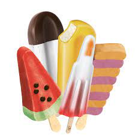

Isbjerget!
Når vi snakker om is, er det uhyggeligt vigtigt for resten af dit liv, altid at have styr på hvad for noget is vi snakker om!
I dette stykke, beskæftiger vi os med frossent vand, som også kaldes is. I modsætning til andre typer is, er denne meget alsidig.
Den kan bruges både til at skøjte på, at holde andre typer af is koldt, eller sænke store dyre skibe, der ikke kan finde ud af at sejle udenom.
sjove facts om is!
- Det er koldt. Altid!
- Sne er lavet af is
- Eksperter fraråder at spise gul sne/is, da smagen af salt er meget gennemtrængende
Is - når det er tørt!
Der findes noget is, som ikke er is! Tøris!
Tøris er egentlig bare noget fucker koldt. Og man kan egentlig diskutere om det overhovedet burde hedde is.
Tøris er nemlig slet ikke væske, men ren kuldioxid under pres, som siden expanderes under stadigt meget kolde temperaturer (-78.5 grader celcius).
Dette medfører en krystaliseringsprocess, som får det til at ligne is.
Når tøris udsættes for normalt atmosfærisk tryk, uden de ekstreme temperaturer, vil det udvide sig, og vende tilbage til sin gasform, uden et mellemliggende væskestadie!
Is, på den fede måde!
Is på den fede måde - og den eneste forekomst af is, hvor det kan spises gult, er.. ja, is. Som i isvaffel, ispind osv.
Denne type is kan smage sindsygt godt, og bruges til at kurere ting som børnegråd, sukkertrang, og andre alvorlige symptomer!
Det er også den mest alsidige type is, da den kan fremstilles, og spises på rigtig mange måder!
Som eksempler, fremvises her et par billeder:
Vaffelis!

ispinde!

Alternativ!